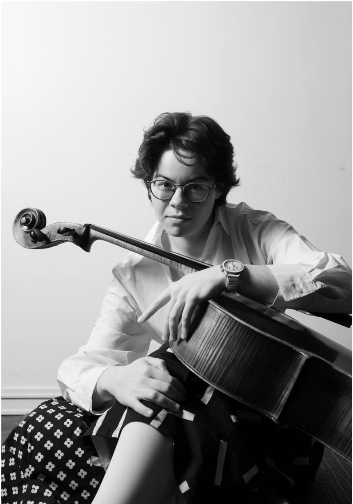
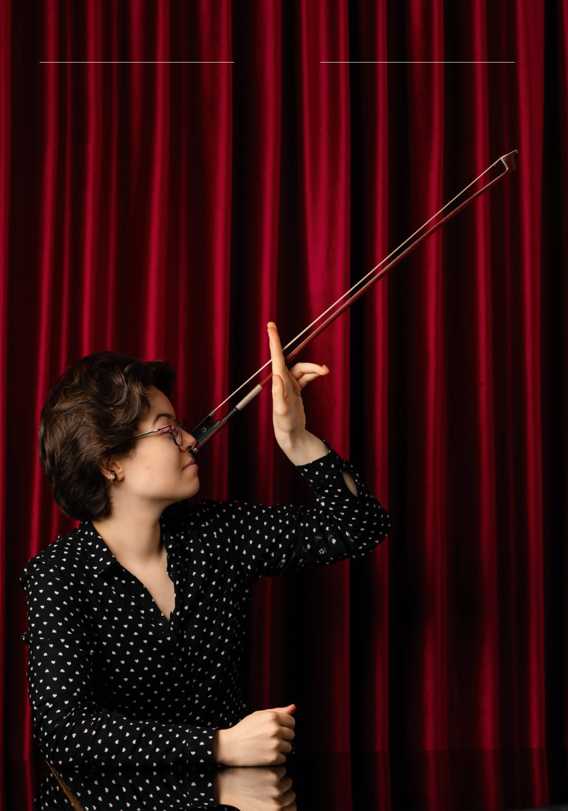
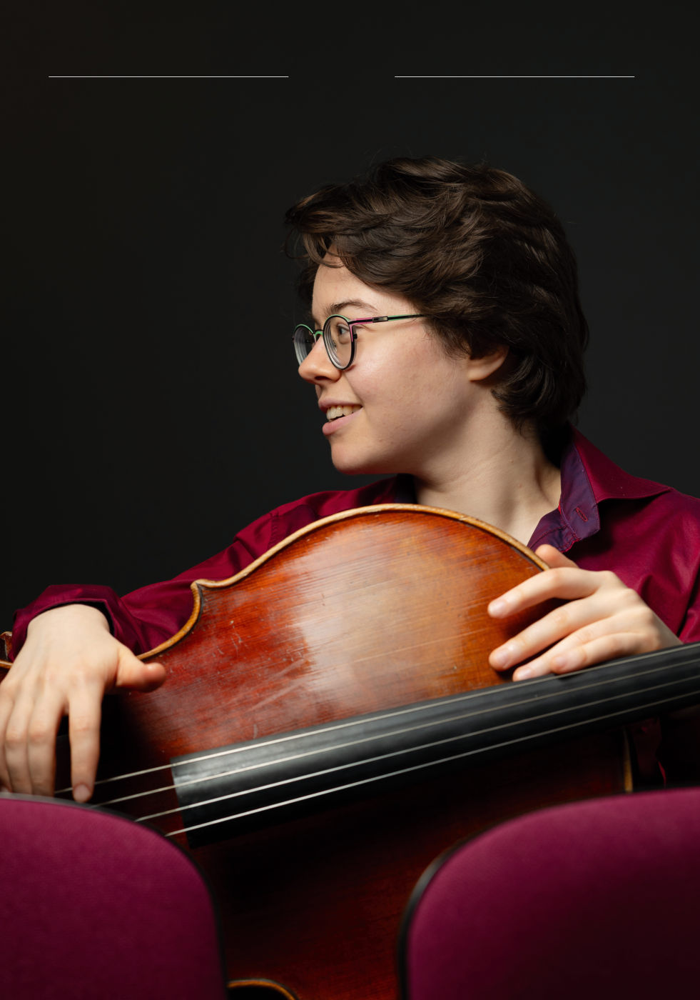

CELLO Личность · с. 8–13
Мария Зайцева: «Я буду делать то, что меня развлекает»
Лауреат VI премии конкурса королевы Елизаветы о неделе в изоляции, дуэте с мамой и о том, что такое успех

В мае 2026 года в Брюсселе завершился конкурс имени королевы Елизаветы – один из наиболее престижных международных музыкальных конкурсов. Одной из его героинь стала российская виолончелистка Мария Зайцева, завоевавшая VI премию. В первом выпуске Cello Журнала мы поговорили с Марией о неделях, проведённых в Брюсселе, конкурсном опыте, музыке и внутренней стороне большого профессионального испытания – о том, что обычно остается за пределами сцены и внимания публики.
Мария Зайцева родилась в Москве в 2001 году. На виолончели начала заниматься в возрасте четырёх лет. В 2020 году окончила МССМШ (колледж) имени Гнесиных, педагоги – И.Н. Зимин, О.В. Бугаев. Обучалась в Академии имени Маймонида; с 2023 года – студентка МГК имени П.И. Чайковского, класс доцента, кандидата искусствоведения О.В. Бугаева. Лауреат международных конкурсов: VII Международный виолончельный конкурс имени Антонио Янигро (2 премия, Загреб, Хорватия, 2020 г.), IV Всероссийский музыкальный конкурс (виолончель) (1 премия, Уфа, 2022 г.), XVII Международный конкурс имени П. И. Чайковского (2 премия, Санкт-Петербург, 2023 г.), 73-й Международный музыкальный конкурс ARD (1 премия, приз зрительских симпатий, Мюнхен, 2024 г.). Принимала участие в мастер-классах Юстуса Гримма, Александра Загоринского, Ола Карлссона, Александра Князева, Мартти Роуси, Александра Рудина, Франса Хельмерсона, Дениса Шаповалова. Стипендиат фoндa Мстислaвa Poстpoповичa. Выступала в лучших концертных залах России, Голландии, Испании, Италии, Литвы, Франции, Хорватии, Чехии, Швейцарии, Эстонии.
CELLO Журнал: Поделитесь, пожалуйста, общими впечатлениями от конкурса королевы Елизаветы. Как всё проходило? Что было интересного, необычного?
Мария Зайцева: Было очень интересно, это большой опыт, и я не знаю никакого другого конкурса, который предоставлял бы неделю перед финалом, которая даётся для подготовки к третьему туру1. Это был уникальный опыт пребывания в полной изоляции без телефона. Участники заезжали в кампус Queen Chapel (здание, в котором обычно проходят уроки и живут студенты) в порядке очерёдности выступлений на третьем туре, каждый день по два человека. По приезде каждый получал партитуру произведения для виолончели с оркестром, специально написанного для финала этого конкурса – Фанг Ман. «Четыре оды, посвящённые цветам», – виолончельную партию, проигрыватель и флешку с записью оркестровой партии в исполнении Бельгийского национального оркестра под управлением Энтони Эрмуса, с которым впоследствии мы и играли в финале. У каждого в комнате был рояль. А в обеденном зале стоял теннисный стол.
Удавалось ли пообщаться с участниками во время совместного проживания?
Удавалось! Завтраки мы готовили самостоятельно, а на обед и ужин должны были собираться все вместе. На следующий день после меня в кампус приехал Ваня Сендецкий – мы всегда могли перекинуться словом. Дильшод Нарзиллаев тоже очень поддержал – мы знакомы давно, и он очень тепло общается. Без русскоговорящих ребят было бы намного тяжелее психологически.
Какую пользу принес такой необычный опыт?
В эту неделю я лучше поняла, в чём сильна самостоятельно, а в чём нет – касательно работы с текстом и психологии подготовки. Для меня как для человека, который работает над произведениями в тандеме с мамой-пианисткой, полезно сознавать, что́ я могу сделать с музыкой абсолютно сама, а что не могу.
Какая атмосфера была внутри конкурса между конкурсантами?
Прекрасная! Очень дружелюбная, постоянный обмен информацией и поддержкой.
Удалось ли в свободное время побывать в новых местах?
Да! Кёльн, Бонн, Брюгге, Антверпен, Брюссель… Брюссель красивый и элегантный, но немного прохладно-функциональный. А Брюгге и Антверпен хорошо сохранившиеся, старинные и красивые. И это очень здорово. Брюгге весь в каналах, он называется маленькой Венецией. Весьма симпатично.
Поделитесь, пожалуйста, своим графиком занятий в обычном режиме и при подготовке к конкурсу?
Встала, поела, полежала, почитала, мама сказала «Пора заниматься!» (смеётся)... К конкурсу я готовилась, как к концерту, только программа больше. Если день свободный, то встаешь – ешь – занимаешься – ешь – занимаешься… Стараюсь через час после того, как встала, начать заниматься. До обеда, потом после обеда, потом после ужина пару часов. Звучит так, как будто я не вылезаю из-за инструмента. Но на самом деле это не так.
Что помогает отвлечься, переключиться и отдохнуть?
По-разному. Бывает, летом хожу, гуляю, слушаю разную, но не классическую музыку. В сезоне этого практически не бывает, только иногда, после больших концертов несколько дней отдыха. Люблю в ансамбле с кем-то поиграть, стараюсь собирать составы, которые мне нравятся, меня это развлекает. Читаю, иногда хожу на концерты.
Чем Вы руководствовались при выборе программы для конкурса?
Собственным интересом: сыграла то, что хотела. Интересно, что в правилах конкурса было условие: не играть собственные транскрипции и переложения.
На конкурсе не было премии лучшему концертмейстеру, что очень жаль, так как ваш дуэт с мамой заслуживает отдельных слов восхищения! Как вы достигли такого удивительного единения, в чем секрет?
Время. Мы 24 года знакомы, 25, если считать ещё 9 месяцев до моего рождения. И понятно, что мой музыкальный вкус сформировался под влиянием ее музыкального вкуса. Конечно, какие-то вещи мы видим по-разному, и случаются дискуссии, но компромисс всегда находится.
Кто больше всего поддерживал Вас на конкурсе? И как?
Кроме Ивана и Дильшода нужно назвать Кшиштофа Михальского, с которым мы знакомы ещё с конкурса ARD (который состоялся в 2024 году) и всё это время были на связи. К сожалению, у нас было мало совместного времени в Chapel, но всё равно удалось немного поговорить, погулять. Также меня очень поддержала русскоговорящая бельгийка, у которой мы жили2.
Она большой любитель классической музыки, приезжала на все мои туры, привозила нас с мамой... Её друзья тоже слушали все мои выступления, мы даже обнаружили общих знакомых из Москвы.
Успех – это постоянная работа, везение, генетика, окружение или что-то ещё?
Комбинация всего этого. Работа, генетика, везение, в какой-то степени и социальные контакты, среда, окружение. То, с кем ты общаешься и играешь, оказывает на тебя большое влияние.
А момент фортуны имеет значение?
Да, конечно! Например, вот на этом конкурсе Ваня Сканави вытянул первый номер на жеребьёвке. Его не пустили на второй тур. Если бы он играл каким-либо другим номером, то конечно, был бы во втором туре.
Поделитесь, пожалуйста, своими дальнейшими творческими планами.
Заканчиваю консерваторию в следующем году, так как взяла академический отпуск в этом году из-за конкурса, и играю концерты. Из интересного: в следующем сезоне выучу новые концерты. Это Симфония Б. Бриттена и Концерт П. Хиндемита. И тогда будет 22 концерта в репертуаре.
Как прошли последующие концерты лауреатов конкурса?
У обладателей IV, V и VI премий было три концерта. Они проходили в Антверпене, Брюгге и в Брюсселе. Нам нужно было сыграть другой концерт, нежели на конкурсе. Я играла Концерт С. Барбера. Потом было необходимо сыграть ещё что-то втроем. Мы попробовали разные варианты, но поначалу не определились. И уже позднее, ночью я вспомнила Шестую фортепианную Прелюдию Д. Шостаковича и предложила ребятам её сыграть. Мы посмотрели, подумали и решили, что это хороший вариант.
Конкурсы – это неотъемлемая часть Вашей жизни. Что они для Вас?
Это более активная подготовка, более активный стресс, чем на концерте, который меня лично растит как музыканта.
Ваш секрет самообладания на сцене?
У меня нет секрета. Я просто, наверное, здоровый стрессоустойчивый человек. Я нервничаю, очень нервничала перед первым туром. В какой-то момент я придумала для себя фразу, которая мне помогает: «Я не волнуюсь, мне просто интересно».

Кто для Вас является любимым исполнителем из исторических и современных музыкантов?
Зависит от того, что я слушаю. Если это что-то русское, то М. Ростропович, Н. Гутман, Д. Шафран. Если французскую музыку, то П. Фурнье. Из современных исполнителей, например, Ж. Перно. Ну понятно, что если что-то барочное – это будет А. Билсма. Мне сейчас думается, что у многих исполнителей есть определённые музыкальные эпохи, в которых им комфортней. Существуют, конечно, универсалы, как Йо Йо Ма или Трульс Мёрк. Но и у них есть зоны, которые я сейчас не чувствую близкими. Если говорить про композиторов, то я очень хочу встретиться с Десятниковым.
А кто хорошо играет Десятникова?
Мне нравится, например, как его играет Рома Викулов, мой друг из «Притяжения».
А какие исполнители других специальностей нравятся?
Мне нравится М.-А. Амлен, хотелось бы посмотреть на него. Я. Хейфеца вживую послушать хорошо бы. Ещё Ф. Крейслер и П. Сарасате. Такую исполнительскую свободу сейчас и представить невозможно. Мне кажется, что это можно было бы вернуть, и это было бы интересно. То, как они свои произведения играют, – это неповторимо. Специально постараешься, и не получится.
Какие произведения ещё не сыграны, но очень хочется?
Концерты П. Хиндемита, Б. Бриттена, Д. Лигети, Ф. Гульды, сюиты Б. Бриттена, соната П. Хиндемита. Много произведений из барочного репертуара.
Блиц
Что Вам ближе: камерная музыка или соло с оркестром?
Ближе игра с оркестром, концерты. Люблю крупную форму.
Домик на берегу озера или яркий мегаполис?
Как в романе «Гиперион» Дэна Симмонса – квартира в ярком мегаполисе, а между комнатами портал. Следующая комната – домик на берегу озера.
Ваши главные черты характера?
Агрессия и лень (смеется).
От чего хотелось бы избавиться, а что приобрести?
Избавиться от резкости. Приобрести хотелось бы бóльшую зоркость в планировании времени. В плане расчёта собственных сил. И хотелось бы лучше разбираться в людях, человеческих отношениях.
Способность, которой Вы хотели бы обладать?
Я бы хотела уметь летать, мне нравится вертикальный способ перемещения.
Качество, которое Вы больше всего цените в музыканте?
Гибкость, тонкость (подробность) в работе, разнообразие, живость, стихийность на сцене.
Композитор или исполнитель любой эпохи, с которым Вы предпочли бы пообщаться лично?
Из любимых: Дебюсси, Равель, Прокофьев, Шостакович. Мне было бы интересно посмотреть на Баха из соображений, чтобы посмотреть, а как там было. О чём он думал, что он писал. Просто посмотреть как на человека. Послушать, как он играл и что звучало вокруг.
А из исполнителей?
Д. Шафран мне был бы интересен, он очень специфический в общении, есть небольшие отрывки документального видео, где слышно, как он репетирует. А вообще со столькими было бы интересно встретиться! Как можно выделить кого-то одного?
